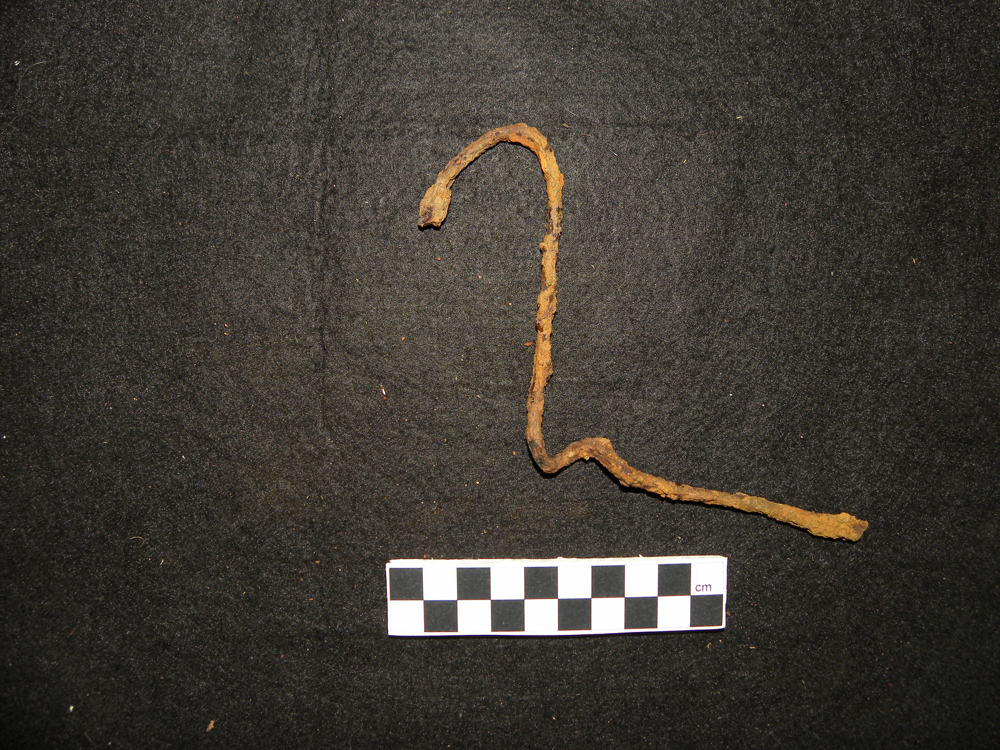
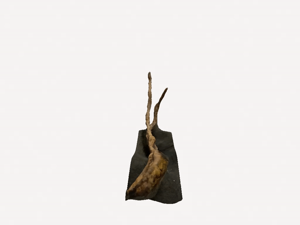
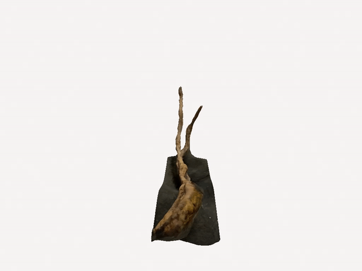

Coat hanger
Location: trench 1, contexts 3 and 4
These are fragments of what appears to be a metal coat hanger. The first fragment (bottom left) was recovered in context 3, and another fragment (bottom right) was recovered in context 4, indicating that it was slightly deeper underground. It is likely that these are two different pieces from the same original coat hanger.
Coat hangers were first invented in 1903 and patented in 1904, when an employee of the Timberlake Wire and Novelty Company became frustrated when all the coat hooks were taken, and twisted a piece of wire into a coat hanger shape. His employer patented the wire hanger, and began producing them for suit retailers. Eventually, they rose in popularity, and coat hangers became commonplace in homes in the 1920s.[6]
It is likely that 82 Brown St would have been home to multiple coat hangers, as guests would need somewhere to hang their coats while visiting, and it is possible that residents stored their clothing on hangers as well. However, though coat hangers are most often used for their intended purpose, it is not uncommon to use them for unintended purposes as well: makeshift radio antenna, lock picks, craft projects, and other uses. Thus, although the owner of this coat hanger likely purchased it intending to use it as a coat hanger, we cannot rule out the possibility that it ended up being used for a different purpose later.
 
